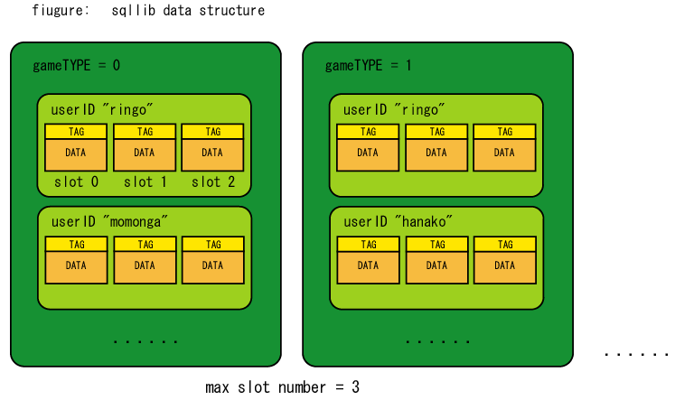

sqllib は、情報の保存と取りだしを、MySQL を使って 簡単に行なえるようにするためのライブラリである。 SQL に不慣れな C言語プログラマでも 簡単にバックエンドのサーバをカスタマイズできるように、 MySQL に SQL 的にアクセスする部分を C言語のライブラリで wrap している。
mm-suite に含まれるサーバー群はすべて sqllib を使って DBMS(MySQL)にアクセスしているので， もし他のDBMS に変更したい場合は，sqllib を変更するだけで， すべてのサーバを移行することが可能である．
sqllib では、データを、 「ゲームタイプ」「ユーザID」「スロット」「タグ」 4種類の情報と関連付けて保存/取りだしできる。
大きなまとまりから順に， gameTYPE, userID, slot となっている． sqllib は1個の MySQL に対して複数のゲームのデータを保存できるようにしている が，gametypeはそのために使われる． また，各ゲーム用データには，ユーザーごとに1個，入れ物が用意されて， そのユーザーには max slot number のスロットが用意され， スロットあたり1個のデータを保管できる． たとえば，通常のロールプレイングゲーム等では，1スロットあたり1体の キャラクターを保管し，1ユーザーあたり複数のキャラクターを保持する．
スロットに保管されているデータはファイルのように扱うことができ， その先頭にはタグ情報が含まれていて， ゲームのサーバーからタグ情報のリストを取りだしたりすることができる． タグ情報をリストの形で取りだす機能は，複数のキャラクターを 選択するときに役にたつ．その場合には，タグ情報のところに， キャラクターの名前を入れて一覧で見れるようにしておく．
sqllibは， データの実体だけ UNIX ファイルに直接保存し， そのファイルをみつけるための index やタグ情報だけを MySQL サーバに 保存する機能を持っている． これによって，データのフラグメント問題が解消される． また副作用として，保存速度が高速化される場合がある(データが大きい場合など)． この機能によって，ディスク容量が十分にあれば， ほぼdbsvをメンテナンスフリーにできる． また，既存の「普通の方式」で保存されていたデータを， UNIXファイル方式に変換するためのツールとして， "fileconv" を用意した． 詳細は， fileconv のソースコードおよびヘルプを参照の事． 詳細は，mysqlfragment-ja.htmlを参照．
さて，sqllib においては，ファイル保存の設定は， sql_storage_create_context 関数の呼びだし時におこなう． sqllibは，基本的に各データを別々のファイルに保存しようとするが， Linux のファイルシステムは1個のディレクトリにあまりにも多くの ファイルが存在するとファイルをみつける検索が激しく遅いため， トップディレクトリ以下に， 多数(100～千個)のサブディレクトリを作ってその中に ハッシュ関数を使って均等に分散配置されるようにしている．
性能が向上する反面， データの中身自体に対するアクセス性が悪くなるという欠点もある． "like" とか "where" など，MySQL のクエリーを使って 直接キャラクターデータにアクセスできないのだ． 大抵のゲームでこれは問題とはならないので， 通常は， UNIX ファイルへのデータ保存を使うとよい．
sqlcontext_t * sql_storage_create_context( char *host, char *user,
char *pass, char *database, char *table,
char *datafile_topdir, int divdirnum );
sqlcontext_t を初期化する。初期化する際に、 指定した情報で MySQL サーバに試しにエントリを insert/delete してみて、 成功するかどうか調べる。 このテストが失敗したら、 NULL ポインタを返す。 メモリが足りないときも NULL ポインタを返す。
datafile_topdir に空文字列 "" を指定すると， データをUNIXファイルに保存する機能は有効にならず， MySQL のテーブル内に直接データを格納する． "/var/hogehogedir" のようにトップディレクトリを指定すると， そのディレクトリの中に，データ保管用のサブディレクトリを作成する． dirdivnum は，何個のサブディレクトリを作るかの設定である． 通常，100から1000程度が使われる．
void sql_storage_cleanup_context( sqlcontext_t *s );
sql_storage_create_contextで初期化した sqlcontext_t を解放する。
int sql_storage_save( sqlcontext_t *s, char *uid,
int type, int slotid, int version, char *tag, int taglen,
char *data, int datalen );
slot を指定して、 version , tag, data を保存する。 データはバイナリデータで、中にゼロを含めることもできる。
int sql_storage_insert( sqlcontext_t *s,
char *uid, int gametype, int slotid, int dataversion,
char *tag, int taglen,
char *data, int datalen );
エントリが存在しているかどうか確認せずにいきなり insert する。
キャラクター保存などには使われず、
書きこみ処理が確実に別の検索キーを持つメールや掲示板などの保存に
使用する。
int sql_storage_load( sqlcontext_t *s, char *uid,
int gametype,
int slotid, int *dataversion, char *tag, int *taglen,
char *data, int *datalen );
データをロードする．タグもロードされる．
int sql_storage_load_by_tag( sqlcontext_t *s,
char *uid,
int gametype,
int *dataversion,
char *tag, int taglen,
char *data, int *datalen );
スロット番号を指定せずに，タグが一致するキャラクターをロードする．
タグには通常キャラクター名などが格納される．
int sql_storage_tag_exists( sqlcontext_t *s, char *tag, int taglen );
指定されたタグをもつエントリがあるかどうか調べる。
キャラクターの名前を指定してキャラクターをロードするときに使う。
int sql_storage_delete( sqlcontext_t *s,
char *uid, int gametype, int slotid );
指定されたスロットのデータを削除する。
DBSV がキャラクターを削除するために使っている。
int sql_storage_delete_by_tag( sqlcontext_t *s,
char *uid, int version, char *tag, int taglen );
指定されたタグをもつエントリを削除する。
MSGSV の mailbox では、メールのメッセージIDをタグで保存しているので、
この削除が役にたつ。
int sql_storage_get_blank_slot( sqlcontext_t *s, char *uid, int gametype,
int maxslot, int *blankslotid );
user IDを指定し、そのIDの空きスロットを見つけだす。
使用例としては、 DBSV がキャラクターを保存するための空きスロットを
知るために使う。
int sql_storage_get_tag_list( sqlcontext_t *s, char *uid, int gametype,
char **tags, int *slots, int *versions, int *num );
user IDを指定し、そのIDに関連付けられているすべてのエントリのタグだけを
リストアップする。
具体的には、DBSV がキャラクター情報のリストを取得するために使っている。
int sql_storage_load_multiple_by_uid( sqlcontext_t *s,
char *uid, int gametype,
int dataversion,
int ofs, int *num,
char **tag, int *taglen,
char **data, int *datalen )
user ID を指定し、最新のものから順番に num 個のエントリを取りだす。
掲示板を実装する事に特化している関数である。
具体的には MSGSV の BBS で使われている。
int sql_storage_count_uid( sqlcontext_t *s, int gametype, int slotid,
int version, int *count );
user IDを指定せず，ゲームタイプ，バージョン，スロット番号を指定して，
その情報にマッチするすべてのユーザーの数をカウントする．
この機能は，msgsv において，一度破壊されたコンタクトリストを復活させる
remake_contact コマンドにおいて，
全ユーザのコンタクトリストを取りだしてスキャンする目的で使われている．
この関数は下の get_all_uid 関数と併用される．
int sql_storage_get_all_uid( sqlcontext_t *s, int gametype, int slotid,
int version,
char **uid, int uid_max, int uid_max_each );
user IDを指定せず，ゲームタイプ，バージョン，スロット番号を指定して，
その情報にマッチするすべてのユーザー名を取得する．
MSGSVは，あらかじめ何個のユーザIDが存在するか調べるため，
sql_storage_count_uid 関数を使ってまず全体の個数を得てメモリを確保
してから，この関数を呼びだしている．
int sql_storage_count_entries( sqlcontext_t *s, int *count );
あるテーブルに含まれるエントリの合計数を，返す．
「キャラが世界全体で何体存在するのか？」を知りたい場合に使える．
int sql_storage_count_entries_by_uid( sqlcontext_t *s,
char *uid, int *count );
あるユーザIDをもつエントリの合計数を求める．
「このユーザはキャラを何体持っているのか？」を知りたい場合に使える．
int sql_storage_load_by_order_id( sqlcontext_t *s, int ord,
char *uid, int *uidlen,
int *gametype,
int *slotid, int *dataversion,
char *tag, int *taglen,
char *data, int *datalen );
insert した順番通りに取りだす．
sqllib では，エントリを保存(insert)するごとに，
一意に決まる番号を auto_increment を使って ord
フィールドに保存していくが，この ord を使う．
下の sql_storage_get_order_id_range 関数と本関数を併用して使う．
サンプルコードは sqllibtest.c に含まれる．
int sql_storage_get_order_id_range( sqlcontext_t *s,
int *min, int *max );
auto_increment される ord フィールドの最大値と最小値を求める．
int sql_storage_discard_old_entries( sqlcontext_t *s, int remain_num );
ord フィールドを使って，最も古いエントリから順に削除する．
ただし，新しいものから順に remain_num に指定した個数分だけ，
消さずに残る．
この関数を使って，掲示板のように，常に最新の N 個だけがテーブルに
保管されているような状態を作ることができる．
通常， save した後などにこの関数を呼べばよい．
int sql_storage_delete_all_entries( sqlcontext_t *s );
テーブル中のすべてのエントリを削除する．
これは DBMS に共通の性能に関する問題であり， DBMSを使う場合は，かならず解決する必要がある． この問題は， MySQL テーブル内で medium blob のような可変長の レコードを使うときに起こる． つまり，データの長さを伸ばしていくと，保存順番によっては， 1個のデータレコードがファイル中の複数の場所に分散してしまい， そのレコードを取りだすために必要なディスクアクセス回数が 増大してしまうのである． 以下に，この問題が起こるプロセスを絵で説明する．
[AAAAAAA]
[AAAAAAA][BBBB]
2個目のデータを保存してから1個目のデータを伸ばしたい時には， 以下のようにするのが理想である． aaaは伸ばした分である．
[AAAAAAA][aaaa][BBBB]
しかし，この方法だと，長いファイルの後ろ全体をずらす必要があり， 現在のファイルシステムはそういった操作に対応していない． したがって，MySQLは以下のように，後ろに追加分をくっつける．
[AAAAAAA][BBBB][aaaa]
今後，この1個目のデータをすべて取得するためには， いちばん先頭の部分と， いちばん後ろの部分の2個所にアクセスする必要があり， ディスクアクセス速度が低下する．
以上の操作を繰りかえすと，ファイルの中身は最終的には 以下のようになってしまう．
[AAAAAAA][BBBB][aaaa][bbbbb][CCCCCC][aaaaa][bbb][aa][bbbb][ccccc][aaa]
これをデータのフラグメント問題と言う．
この問題を解決するには，
可変長のデータレコードを使用しないようにするか，
時々 optimze table を発行するしかない．
ただし，optimize table は時間がかかる上，
optimize table してからしばらくたつと結局フラグメントが起こってしまう．
これは不便すぎるので，
sqllib では，この問題を簡単に解決する方法として，
可変長の部分だけをUNIXファイルに直接保存して，
そのファイルの位置だけをMySQLに固定長で保存するように
設定ができるようになっている．
UNIXファイルも結局はフラグメント問題をかかえているのだが，
MySQLのデータファイルよりもフラグメントの単位が大きいので，
問題が起こりにくいのである．